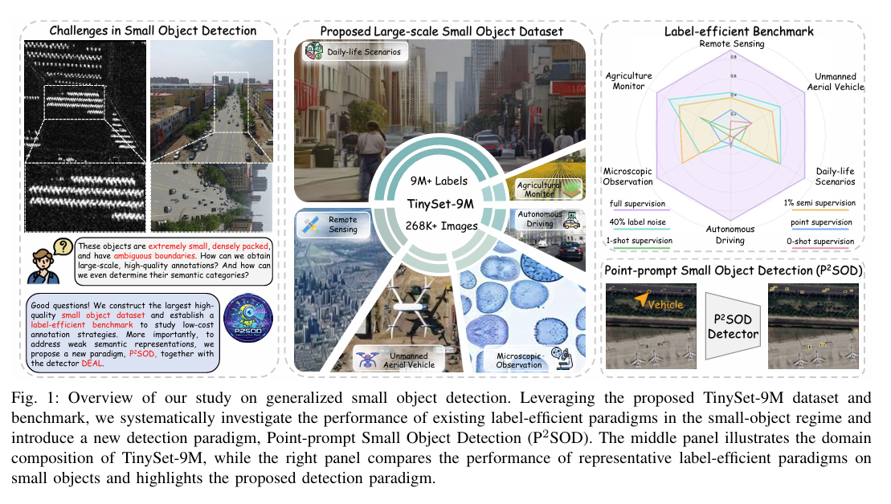
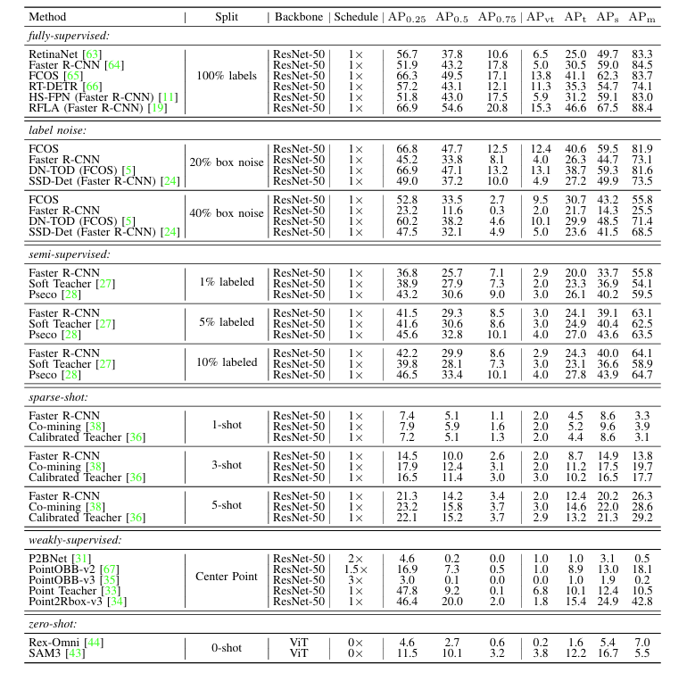
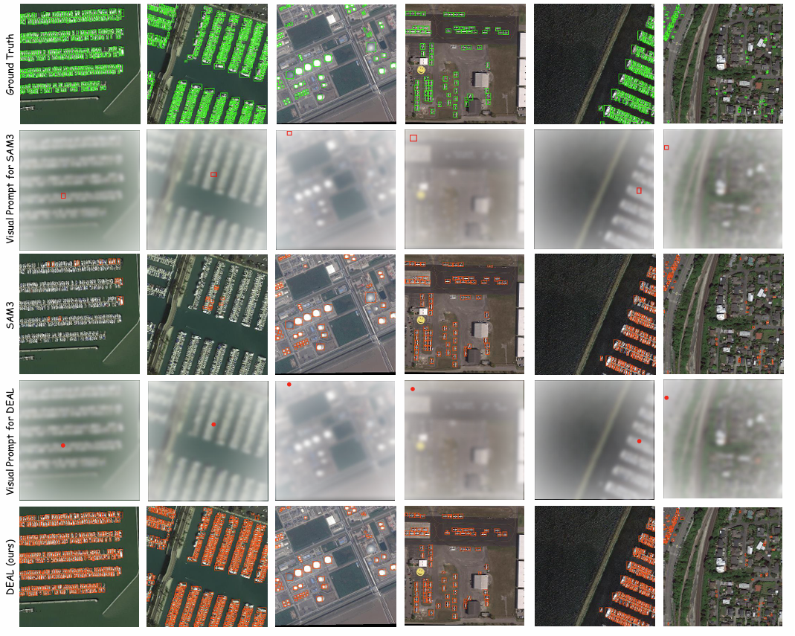

TinySet-9M: A Foundational Benchmark and Point-Prompted Paradigm for Generalized Small Object Detection
Haoran Zhu,
Wen Yang,
Guangyou Yang,
Chang Xu,
Ruixiang Zhang,
Fang Xu,
Haijian Zhang,
Gui-Song Xia,
School of Electronic Information, Wuhan University, Wuhan, China
Environmental Computational Science and Earth Observation Laboratory, EPFL, Sion, Switzerland
School of Artificial Intelligence, Wuhan University, Wuhan, 430072, China
[Paper]
[Code and Model]

Figure 1. Overview of our study on generalized small object detection. Leveraging the proposed TinySet-9M dataset and
benchmark, we systematically investigate the performance of existing label-efficient paradigms in the small-object regime and
introduce a new detection paradigm, Point-prompt Small Object Detection (P2SOD). The middle panel illustrates the domain
composition of TinySet-9M, while the right panel compares the performance of representative label-efficient paradigms on
small objects and highlights the proposed detection paradigm.
|
Abstract
Small object detection (SOD) remains challenging due to extremely limited pixels and ambiguous object boundaries. These characteristics lead to challenging annotation, limited availability of large-scale high-quality datasets, and inherently weak semantic representations for small objects. In this work, we first address the data limitation by introducing TinySet-9M, the first large-scale, multi-domain dataset for small object detection.
Beyond filling the gap in large-scale data, we establish a label-efficient benchmark to examine the effectiveness of existing low-cost annotation strategies for small objects. Our evaluation reveals that state-of-the-art detectors suffer from severe performance degradation under reduced supervision, highlighting a critical challenge in label-efficient SOD.
Secondly, to tackle the limitation of insufficient semantic representation, we move beyond training-time feature enhancement and propose a new paradigm termed Point-Prompt Small Object Detection (P$^2$SOD). This paradigm introduces sparse point prompts at inference time as an efficient information bridge for category-level localization, enabling semantic augmentation.
Building upon the P$^2$SOD paradigm and the large-scale TinySet-9M dataset, we further develop DEAL (DEtect Any smalL object), a scalable and transferable point-prompted detection framework that learns robust, prompt-conditioned representations from large-scale data. Extensive experiments demonstrate that DEAL outperforms fully supervised baselines by 31.4\% AP75 on TinySet-9M, while generalizing effectively to unseen categories and unseen datasets.
We expect that the proposed dataset will facilitate the rapid advancement of small object detection, and that the P$^2$SOD paradigm will offer a new perspective on how small objects can be detected.
TinySet-9M
|
label-efficient benchmark
|

Figure 2. Main results of fully-supervised, noise-supervised, semi-supervised, sparse-annotated,
point-supervised, sparse-shot, and zero-shot methods on TinySet-9M (class-agnostic).
For the training schedule, 1$\times$ denotes 3 epochs.
All experiments are run on a computer with an NVIDIA RTX 3090 (24 GB) GPU. We use FP32 with 1024 x 1024 inputs.
|

Figure 3. Detection results of zero-shot methods SAM3 and our proposed DEAL on DOTA-v2.0 dataset.
Green boxes, red boxes, red points, and orange boxes denote the gt, box visual prompts,
point visual prompts, and detection results, respectively.
|
Citation
Zhang, Yan, et al. "Drone-based RGBT tiny person detection." ISPRS Journal of Photogrammetry and Remote Sensing 204 (2023): 61-76.
|
License
The RGBTDronePerson dataset is released under the Creative Commons Attribution 4.0 International (CC BY 4.0) license. You are free to share, modify, and use the dataset for academic or commercial purposes, provided that proper attribution is given to the original authors. Please cite the following paper when using the dataset: Zhang et al., "Drone-based RGBT Tiny Person Detection", ISPRS Journal of Photogrammetry and Remote Sensing, 2023.
|